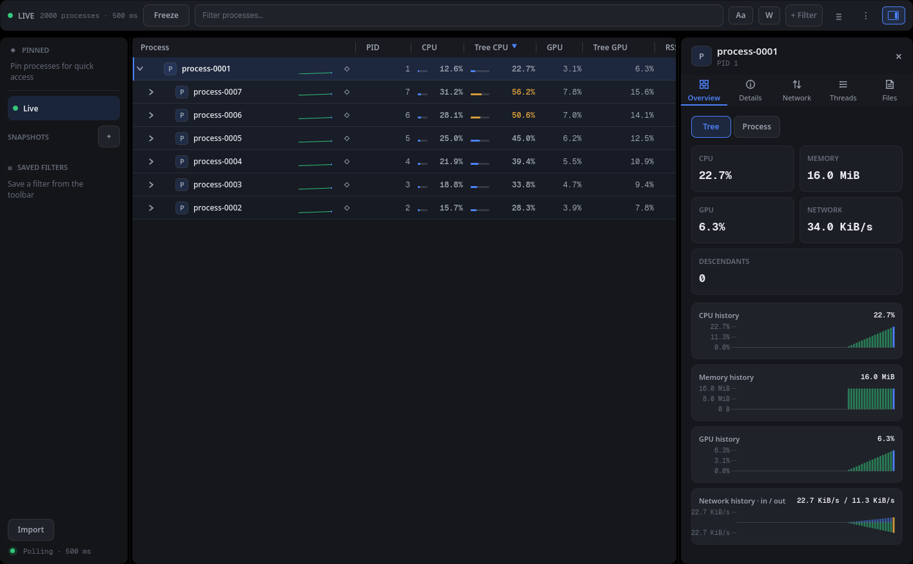

Process tree
Processes appear under their parents, with stable identities across refreshes.
Process explorer for Linux and macOS
A desktop process explorer built with Rust and QML. It shows running processes as a tree and includes resource columns, filtering, snapshots, process actions, and an inspector.
Public packages are available for Linux and Apple silicon macOS.

Current build
Processes appear under their parents, with stable identities across refreshes.
CPU, GPU, memory, and network values for individual processes and their branches, where supported by the operating system.
Filter branches, search visible columns, and inspect details, metrics, threads, files, sockets, and network activity.
Save snapshots, configure columns, pin processes, and run supported process actions. Light and dark themes are included.
Implementation
QML renders the interface through typed Qt models. Rust owns the process tree and application services. Live telemetry comes from the same processtree crate used by Mimameidr.